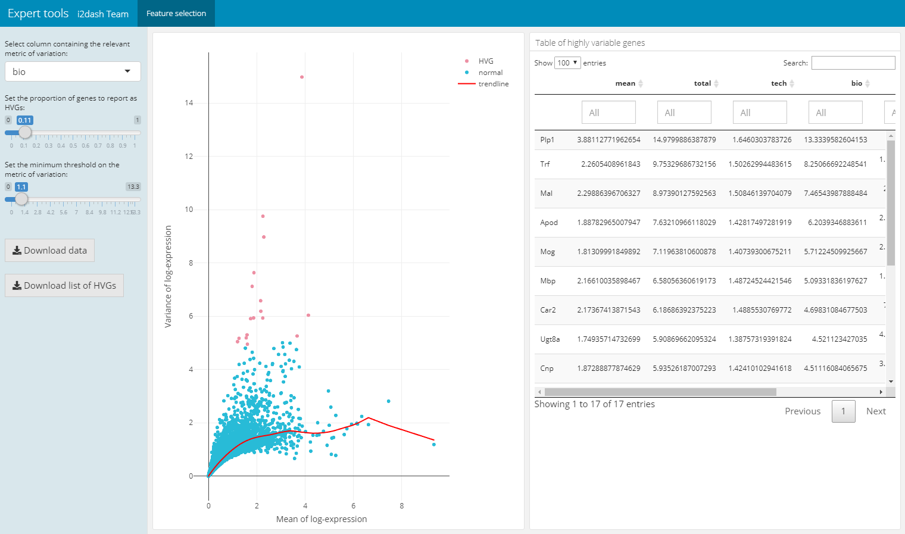

Documentation
Arsenij Ustjanzew
arsenij.ustjanzew@mpi-bn.mpg.deJens Preussner
jens.preussner@mpi-bn.mpg.de12 June 2020
Documentation.RmdCompiled date: 2020-06-12
Last edited: 22.01.2020
License:
Introduction
This documentation presents an overview of the i2dash.scrnaseq functionality.
The i2dash.scrnaseq R package is an extension for the core i2dash package, which supplies several plotting methods embedded in components and pre-defined pages with linked components. The components provide different shiny based input possibilities (e.g. drop down selection boxes for changing the values plotted along the axes) and enables an enhanced user interactivity. All of the provided functions in the i2dash.scrnaseq package have wrapper for SingleCellExperiment and Seurat objects and enable the direct usage of these objects.
Setting up the data
Throughout this vignette, we’ll use the AztekinTailData dataset from the package scRNAseq which contains expression values for 13199 cells from Xenopus tail. With the scater package we add some metadata to the SingleCellExperiment object.
# Installation of necessary packages: # if (!requireNamespace("BiocManager", quietly = TRUE)) # install.packages("BiocManager") # BiocManager::install(c("scRNAseq", "scater", "scran")) library(scRNAseq) library(SingleCellExperiment) library(scater) library(scran) sce <- AztekinTailData() # Convert some columns to factors cols <- c("sample", "DevelopmentalStage", "DaysPostAmputation", "cluster", "CellCyclePhase", "Lane", "Condition", "batch") colData(sce)[cols] <- lapply(colData(sce)[cols], as.factor) # Normalize the expression values sce <- logNormCounts(sce, exprs_values="counts") # Calculating QC metrics sce <- calculateQCMetrics(sce) sce <- addPerCellQC(sce) sce <- addPerFeatureQC(sce) # Get highly variable genes gene.var <- modelGeneVar(sce) # the warning message can be ignored hvg <- getTopHVGs(gene.var, prop=1000)
Creating an i2dashboard object
At first, we create a new i2dashboard object1:
library(i2dash) library(i2dash.scrnaseq) library(magrittr) dashboard <- i2dashboard( title = "scRNA-Seq Analysis", author = "i2dash team", interactive = TRUE, theme = "yeti", datadir = "datadir_doc" )
Components overview
In the following, the provided componenets from i2dash.scrnaseq will be introduced:
Scatterplot
For demonstration, we add a new page “Scatterplot” with the 2x2 grid layout to the dashboard:
dashboard %<>% i2dash::add_page( page = "scatter", title = "Scatterplot", layout = "2x2_grid", menu = "Components" )
Now, we add the scatterplot compoenent to the i2dashboard object with the add_component() function from the i2dash package. We specify the type of the component by providing the character string “i2dash.scrnaseq::scatterplot” as the component argument. With the page parameter we define the page the component is added to. If we do not define a page the component is added to the “default” page of the i2dashboard object.
The further parameters are specific for scatterplot component. As the object parameter we provide the sce object, from which the required data is extracted. Additionally, we need to specify with the from parameter, where the data for the scatterplot is obtained from. In case of a SingleCellExperiment object we can choose, wether the columns from “colData”, “rowData” or “reducedDim” should be used for mapping on the x- and y-axis as well as for the colour by options. By default all numeric and integer columns are utilized for the x and y-values and all numeric, integer or factorial columns for the colour by option. In the interactive mode the dropdown menues of for the x-, y-axis and colour_by are provided where the user can select the column that should be plotted (the column names are used in the dropdown menu). In the static mode always the first column is used. Furthermore, we can specify the columns that should be mapped. For colouring the scatterplot by feature expression values, we can provide an assay with the parameter exprs_values. It should be a character vector containing the column names. Optionally, we can provide our own axis titles with the parameters x_title and y_title, that do not change according to the selected columns.
# this component is added to the page "scatter" in the i2dashboard object; # by default the colData of the object is used for the 'use' parameter; dashboard %<>% i2dash::add_component( component = i2dash.scrnaseq::scatterplot, page = "scatter", object = sce, x = c("total_features_by_counts", "log10_total_features_by_counts"), # specify columns for x and y axis y = c("total_counts", "log10_total_counts"), title = "Scatterplot of colData" # title of the component ) %>% i2dash::add_component( component = i2dash.scrnaseq::scatterplot, page = "scatter", object = sce, from = "reducedDim", use_dimred = "UMAP", exprs_values = "logcounts", # specify the assay for feature expression values subset_row = hvg, # subset the assay to top 1000 hvg's title = "Scatterplot of reducedDim" )
Note: In the static mode no selection options are given, therefore it is required to specify the columns explicitly, which should be used with x and y parameters.
After assembling the dashboard with the code below, we can inspect the resulting R markdown file by using the “Run Document” button of Shiny inside RStudio.
i2dash::assemble(dashboard, exclude = "default")
| The plot settings of a scatterplot component | The scatterplot page after assembly |
|---|---|
 |
 |
The scatterplot can be coloured by metadata, feature expression or single cell labels:
| Coloured by metadata | Coloured by feature | Coloured by label |
|---|---|---|
 |
 |
 |
Violinplot
With i2dash.scrnaseq::violinplot a component containing a vertical violinplot is created. The parameter from defines where to obtain the data from (either “colData” or “rowData” in case of a SingleCellExperiment object). y describes the observations, optionally the observations can be grouped by factors(group_by parameter). Therefore, we need to specify the columns containing factors that should be used for grouping the observations along the x-axis. By default all columns with numeric or integer values are used in the dropdown menu of the plot settings in the interactive mode and no columns are used for grouping. Optionally, we can provide our own axis titles with the parameters group_by_title and y_title, that do not change according to the selected columns.
# on the left side of the page will be a violinplot without grouping # on the right side will be a violinplot with grouping dashboard %<>% i2dash::add_page(page = "violin", title = "Violin plot", layout = "2x2_grid", menu = "Components") %>% i2dash::add_component( component = i2dash.scrnaseq::violinplot, page = "violin", object = sce, y = "log10_total_counts", from = "colData", title = "1. Violin plot of colData" ) %>% i2dash::add_component( component = i2dash.scrnaseq::violinplot, page = "violin", object = sce, from = "colData", group_by = c("CellCyclePhase","Lane","DaysPostAmputation","Condition"), title = "2. Violin plot of colData" )
Boxplot
With i2dash.scrnaseq::boxplot a component containing a horizontal boxplot is created. The parameter from defines where to obtain the data from (“colData” or “rowData” in case of a SingleCellExperiment object). x describes the observations, optionally the observations can be grouped by factors (group_by argument). Therefore, we need to specify the columns containing factors that should be used for grouping the observations along the y-axis. By default all columns with numeric or integer values are used for the “observations” dropdown menu in theplot settings of the interactive mode and no columns are used for grouping if “group_by” is not provided. Optionally, we can provide our own axis titles with the parameters group_by_title and x_title, that do not change according to the selected columns.
# on the left side of the page will be a boxplot without grouping # on the right side will be a boxplot with grouping dashboard %<>% i2dash::add_page(page = "box", title = "Boxplot", layout = "2x2_grid", menu = "Components") %>% i2dash::add_component( component = i2dash.scrnaseq::boxplot, page = "box", object = sce, from = "colData", x = "log10_total_counts", title = "1. boxplot of colData" ) %>% i2dash::add_component( component = i2dash.scrnaseq::boxplot, page = "box", object = sce, from = "colData", group_by = c("CellCyclePhase","Lane","DaysPostAmputation","Condition"), title = "2. boxplot of colData" )
Barplot
The barplot component created by “i2dash.scrnaseq::barplot” has two possible visualisation options. The first option visualizes a horizontal barplot with the number of observations along the x-axis that are grouped along the y-axis. This option is initiated by only providing the argument y_group_by. The second option generates a horizontal barplot with the relative number of observations grouped according to the levels provided by x_group_by. This option requires the provision of both parameters y_group_by (grouping the observations along the y-axis) and x_group_by (grouping the observations along the x-axis). Only columns containing factors are valid for this barplot component. By default, without a character vector with names of columns provided for y_group_by, all valid columns are utilized. No columns are used for x_group_by, if not provided. Again we need to specify where to obtain the data from with the use parameter. Optionally, we can provide our own axis titles with the parameters y_group_by_title and x_group_by_title, that do not change according to the selected columns.
# 1. mode: absolute number of observations (left component) # 2. mode: relative number of observations grouped by 'x_group_by' (right component) dashboard %<>% i2dash::add_page(page = "bar", title = "Barplot", layout = "2x2_grid", menu = "Components") %>% i2dash::add_component( component = i2dash.scrnaseq::barplot, page = "bar", object = sce, from = "colData", title = "sce barplot: total number of observations", x_group_by_title = "Number of cells" ) %>% i2dash::add_component( component = i2dash.scrnaseq::barplot, page = "bar", object = sce, y_group_by = c("CellCyclePhase","Lane","DaysPostAmputation","Condition"), x_group_by = c("CellCyclePhase","Lane","DaysPostAmputation","Condition"), title = "sce barplot: relative number of observations", x_group_by_title = "Fraction of cells" )
Heatmap
i2dash.scrnaseq provides a component containing a heatmap based on the package ComplexHeatmap. In case of the wrapper for the SingleCellExperiment and Seurat object it is recommended to provide a vector with names of features/ genes of interest (subset_row) that match with the row names of the used assay. The assay name is defined by exprs_values/ assay (by default the “counts” assay of the SingleCellExperiment object is used and the “data” slot of the “RNA” assay of the Seurat object). The rows of the heatmap are the features of interest and columns are the cells. Optionally, we can provide the parameter split_by, that should be a character vector containing the column names of “colData” (only columns with factors are valid). This creates a heatmap that is splitted according to the levels of split_by. Another parameter enables to visualize a heatmap, where the cells (columns) are aggregated according to the levels inside aggregate_by (each level is a column in the heatmap). These visualization options can be interactively adjust in the interactive mode. Also the interactive mode enables the selection of the clustering distance, the clustering method, the options whether to cluster none, only the rows or columns or both. The static mode doesn’t offer interactive selection options. Therefore, we can specify several factors with the parameters to be used in the static mode: split_by, aggregate_by (if you use the static mode and provide both parameters, aggregate_by will be preffered against split_by), cluster_rows (a logical), cluster_columns (a logical), clustering_distance (a pre-defined character which is one of the follwing: (“euclidean”, “maximum”, “manhattan”, “binary”, “minkowski”) and clustering_method (to perform hierarchical clustering (“average”, “ward.D”, “ward.D2”, “single”, “complete”, “mcquitty”, “median”,“centroid”)).
dashboard %<>% i2dash::add_page(page = "heatmap", title = "Heatmap", layout = "focal_left", menu = "Components") %>% i2dash::add_component(# the basic heatmap with cells as columns and features as rows component = i2dash.scrnaseq::heatmap, page = "heatmap", object = sce, exprs_values = "logcounts", subset_row = hvg[1:20], title = "Basic heatmap sce" ) %>% dashboard <- i2dash::add_component(# splitted heatmap page = "heatmap", component = i2dash.scrnaseq::heatmap, object = sce, exprs_values = "logcounts", subset_row = hvg[1:20], split_by = c("CellCyclePhase","Lane","DaysPostAmputation","Condition"), aggregate_by = c("CellCyclePhase","Lane","DaysPostAmputation","Condition"), title = "Splitted heatmap" ) %>% i2dash::add_component(# aggregated heatmap component = i2dash.scrnaseq::heatmap, page = "heatmap", object = sce, exprs_values = "logcounts", subset_row = hvg[1:20], aggregate_by = c("CellCyclePhase","Lane","DaysPostAmputation","Condition"), title = "Summarized heatmap" )
| The plot settings of a heatmap component | The heatmap page after assembly |
|---|---|
 |
 |
Pre-defined pages - an overview
Page of the feature expression
The next page is a pre-defined page in the i2dash.scrnaseq package and enables the exploration of gene expression values along the dimension reduction and clustering. This can be very useful e.g. for markergenes to compaire their expression with the clustering. We add and define this page with the add_feature_expression_page() method.
The page is build up on the 2x2 grid layout: + Table of genes: The top left component is a table representing the statistic of the number of cells per grouping factor. Each row corresponds to a gene. We define the genes in the table with the parameter subset_row. In our example we use the first hundred highly variable genes. We provide several grouping factors with the parameter group_by. The grouping factor can be interactively selected.
Violin plot: The violin plot is located in the bottom left corner of the page and shows the expression values of the gene selected in the table. The plot is grouped by the selected grouping factor.
Reduced dimension plot: On the right side of the page two scatterplots representing the dimension reduction (
use_dimred) are shown. The upper one is colored by the expression values of the selected gene. The lower one is coloured by the selected grouping factor.
The components are linked together, which means that it is possible to select a row in the table, which represents a gene and the upper scatterplot is coloured by the expression values of the selected gene. Also it is possible to select several points in the scatterplot with the lasso or rectangular tool from plotly. According to the selection the violin plot reacts and is recalculated. This functionality works also in the static mode.
dashboard %<>% i2dash.scrnaseq::add_feature_expression_page( object = sce, use_dimred = "UMAP", exprs_values = "logcounts", group_by = c("CellCyclePhase","Lane","DaysPostAmputation","Condition"), subset_row = hvg[1:100], title = "Gene explorer" ) # The warning message: "attributes are not identical across measure variables; they will be dropped" can be ignored.

Page for dimension reduction and sample metadata analysis
The following page for cell metadata analysis is one of the pre-defined pages in the i2dash.scrnaseq package. We add and define this page with the add_dimred_sample_page() method.
This page provides the possibility to inspect the dimension reduction and distribution of cell metadata (e.g. cluster, timepoint, number of genes, etc). The page is build up on the 2x2 grid layout, which means that it may conatain a maximum of four components. The first component is obligatory a dimension reduction plot and the three other component slots are occupied by either box-, bar- or silhouette plots.
Reduced dimension plot: The data to use for the reduced dimension plot is defined by the parameter
use_dimred. The plot is coloured by factorial metadata. With the parametersample_metadatawe provide a character vector containing the column names of sample metadata stored in the SingleCellExperiment or Seurat object. The parametergroup_byshould be one of the column names fromsample_metadataand defines the colouring of the scatterplot. In the interactive mode of the dashboard, we can choose from columns of factorial data and colour the scatter plot by this factors. E.g. this is useful when we have processed a clustering on the dimension reduction and provide the name of the metadata column containing the clustering result withsample_metadata.Bar- / box plots: As was said, the remaining component slots are occupied by box- or bar plots. The data for these plots is also defined in
sample_metadata. The data type of the metadata determines whether the component is a bar- or a boxplot. Factorial data results in a barplot: The bars are the levels and the height of the bars represents the number of observation of the level. Numeric data produces a boxplot, which is grouped along the x-axis by the factorial metadata defined withgroup_by. In the interactive mode, the box plot is grouped by the selected data in the dropdown menu. Note, that the colors used for the box plot groups correspond to the colors used in the scatterplot.Silhouette plot: Optionally we can define that one of the tree slots is occupied by a silhouette plot. This is done by setting the parameter
show_silhouettetoTRUE. The grouping of the silhouette plot is also defined bygroup_byparameter or the selection of the dropdown menu in the interactive mode.Additional barplot: Per default, one of the three slots is occupied by a bar plot that shows the number of observations of data defined by
group_byor the selection of the dropdown menu in the interactive mode. It is possible to prevent this behaviour by setting the parametershow_group_sizestoFALSE.
A special feature of this page is, that the plots are linked together. This means that it is possible to select several points in the scatter plot of the dimension reduction or bars in the bar-/ silhouette plots with the lasso or rectangular tool from plotly. according to the selection the other plots are recalculated. This functionality works also in the static mode of the dashboard.
In this example we create two of these pages. Both pages are grouped under the button “Cell metadata” in the navigation bar. The first page contains a dimension reduction, a bar plot of the groups shown in the dimension reduction, a silouette plot and a box plot of the subsets_Mito_percent column. Therefore, we provide only two metadata columns in sample_metadata. The second page does not contain the silhouette plot or the bar plot of group_by, instead we provide three more metadata column names, which will be used in the three free component slots.
# Page for metadata exploration with show_group_sizes = TRUE and show_silhouette = TRUE (see left image below) dashboard %<>% i2dash.scrnaseq::add_dimred_sample_page( object = sce, use_dimred = "UMAP", sample_metadata = c("cluster","total_features_by_counts"), group_by = "cluster", show_group_sizes = TRUE, show_silhouette = TRUE, page = "dimred_sample_page1", title = "Cell metadata 1", menu = "Cell metadata" ) # Page for metadata exploration with show_group_sizes = FALSE and show_silhouette = FALSE (see right image below) dashboard %<>% i2dash.scrnaseq::add_dimred_sample_page( object = sce, use_dimred = "UMAP", sample_metadata = c("CellCyclePhase","cluster","total_counts","Condition"), group_by = "cluster", show_group_sizes = FALSE, show_silhouette = FALSE, page = "dimred_sample_page2", title = "Cell metadata 2", menu = "Cell metadata" )
Metadata exploration with show_group_sizes = TRUE and show_silhouette = TRUE
|
Metadata exploration with show_group_sizes = FALSE and show_silhouette = FALSE
|
|---|---|
 |
 |
Page for dimension reduction and feature metadata analysis
This page (add_dimred_feature_page()) can be used for the exploration of marker genes. The page contains two components, the first component is a scatterplot representing the dimension reduction (use_dimred) coloured by the expression values of the selected marker gene (from exprs_values). The second component is a table with feature metadata. This additional metadata is obtained from columns of “rowData”/ “feature.data”. The rows represent the features. By clicking on a row the feature is selected in the table and the colouring of the scatterplot changes according to its exression values. This linking mechanic is available in the static mode.
dashboard %<>% i2dash.scrnaseq::add_dimred_feature_page( object = sce, use_dimred = "UMAP", exprs_values = "logcounts", feature_metadata = c("mean_counts", "log10_mean_counts", "log10_mean_counts"), # from colnames(rowData(sce)) subset_row = hvg[1:100], # vector with features of interest title = "Dimension Reduction & Metadata" )
Feature expression grid page
Another pre-defined page, that is only used in the interactive mode, is the “Feature grid” page of i2dash.scrnaseq. The Feature grid page (add_feature_grid_page()) visualizes several feature expressions (obtained from exprs_values) along a dimension reduction in a grid layout. The user can select the dimension reduction (defined by the parameter use_dimred), the features of interest (subset_row) and the grid layout. If subset_row is not provided, all features of exprs_values are selectible on the page. After that, the user generates the image by clicking on a button. This page enables the user to create high-quality figures for presentations/ publications and define the dimensions of the figure, which is then provided for download.
dashboard %<>% i2dash.scrnaseq::add_feature_grid_page( object = sce, use_dimred = "UMAP", exprs_values = "counts", subset_row = rownames(sce)[1:100], # vector with features of interest title = "Multi Gene Expression" )
Feature selection page
The following pre-defined page can be created by the function add_feature_selection_page() and allows to quantify per-gene variation and the exploration of the threshold on the metric of variation to get the desired set of highly variable genes (hvg). The function creates a page containing a scatter plot of the per-gene variation of log-expression against the mean log-expression and a table with features and their metrics of variation. The sidebar on the left contains Shiny inputs, by which you can color highlight the highly variable genes in dependency to the proportion and minimal threshold of the relevant variation metric. Also you can download the color highlighted hvg or the entire variation metrics table. With the parameter use_function we can define the function, which should be used for the quantification of per-gene variation. We can choose one of scran’s functions (“modelGeneVar”, “modelGeneVarByPoisson”, “modelGeneCV2”, “modelGeneCV2WithSpikes”, “modelGeneVarWithSpikes”). Note, that this page only works in the interactive mode with the use of Shiny.
# feature selection dashboard %<>% i2dash.scrnaseq::add_feature_selection_page( object = sce, exprs_values = "logcounts", use_function = "modelGeneVar", menu = NULL # per default this page would be under the point "Tools" in the navigation bar. With NULL we suppress this behavior. )

Parameter selection for dimension reduction methods
For plotting or clustering cells to identify cells with similar transcriptomic profiles of thousands of genes, it is necessery to reduce the number of separate dimensions. i2dash.scrnaseq provides a pre-defined page, which calculates the dimension reduction from count tables and enables the inspection of specific key paramters. This allows the user to compare reduced dimension plots with different values for key parameters and find the optimal values for your dataset. The user can choose interactively between the the non-linear t-stochastic neighbor embedding (t-SNE) merthod or the non-linear uniform manifold approximation and projection (UMAP) method.
t-SNE finds a low-dimensional representation of the data that preserves the distances between each point and its neighbours in the high-dimensional space. With add_dimred_comparison_page() we can inspect the “perplexity” parameter that determines the granularity of the visualization as well as the “theta” parameter, that describes the accuracy of optimization. [^dr]
As described in the book “Orchestrating Single-Cell Analysis with Bioconductor” [^book] the UMAP visualization, compaired to t-SNE, tends to have more compact visual clusters with more empty space between them. It also attempts to preserve more of the global structure than t-SNE. From a practical perspective, UMAP is much faster than t-SNE, which may be an important consideration for large datasets. The page allows the verification of the number of neighbours (“n_neighbors”), which has a great effect on the granularity of the output. [^dr]
The page we create with add_dimred_comparison_page() has two tabs “Dimension reduction” and “Compare selected plots”. By adjusting the parameters in the sidebar and clicking on the “Generate plot” button the scatterplot is generated in the “Dimension reduction” tab. If we want to compare the plot with the specified parameters with other dimension reduction plots, we click the button “Add plot for comparison”. The plot is then listed in the table of the sidebar. It is also possible to delete specific plots from the table by clicking the delete button in the row of the plot. In the tab “Compare selected plots” all saved plots are visualized in a grid layout.
dashboard %<>% i2dash.scrnaseq::add_dimred_comparison_page( object = sce, exprs_values = "logcounts", seed = 100, subset_row = hvg[1:100] )
| Tab: “Dimension reduction” | Tab: “Compare selected plots” |
|---|---|
 |
Usage without single-cell objects
All components and pages can be used without a SingleCellExperiment or Seurat object. In case of the single-cell object a wrapper function is used, therefore it is possible to provide raw data (e.g. data.frames) to the underlying functions. The following is an example use-case of the core bubbleplot component function. For demonstration purpose we use the mtcars data.frame.
# adding the bubbleplot component to the i2dashboard object dashboard %<>% i2dash::add_component( component = i2dash.scrnaseq::bubbleplot, x = mtcars[c("mpg", "disp")], y = mtcars[c("drat", "wt")], size = mtcars[c("hp", "cyl")], labels = rownames(mtcars), title = "Core function of bubbleplot" ) assemble(dashboard, file = "docu.Rmd", pages = "default")
Use colormaps
i2dash provides the possibility to use colormaps that are applied document wide. The components and pages of i2dash.scrnaseq can handle the user defined colormaps. If the plot has the possibility to colour elements by factors, e.g. the scatterplot component can be coloured by factorial metadata, the colormap is used for the specified metadata column. The name of the colormap shoud be identical with the column name that contatins the factors.
First we define our colormaps:
colormap1 <- c("yellow", "red", "black") colormap1 <- setNames(colormap1, levels(colData(sce)$CellCyclePhase)) colormap2 <- c('#f3cec9', '#e7a4b6', '#cd7eaf', '#a262a9', '#6f4d96', '#3d3b72') colormap2 <- setNames(colormap2, levels(colData(sce)$Lane)) # it is important, that the name of the colormap is identical with the column in the sce dashboard <- i2dash::add_colormap(dashboard, map = colormap1, name = "CellCyclePhase") dashboard <- i2dash::add_colormap(dashboard, map = colormap2, name = "Lane")
Now we create a 2x2_grid page and add a scatterplot and a boxplot to the page.
# add new page dashboard %<>% i2dash::add_page(page = "color", title = "Colormaps", layout = "2x2_grid") %>% i2dash::add_component(# add scatterplot to the page component = i2dash.scrnaseq::scatterplot, page = "color", object = sce, x = "log10_total_features_by_counts", y = "log10_total_counts", colour_by = "CellCyclePhase", title = "Scatterplot with colormap 1" ) %>% i2dash::add_component(# add violinplot to the page dashboard = dashboard, component = i2dash.scrnaseq::violinplot, page = "color", object = sce, from = "colData", y = "total_counts", group_by = "Lane", title = "Boxplot with colormap 2" ) %>% assemble(file = "docu.Rmd", exclude = "default")
Link components together
The linking of several components enables an improvement in the communication of the structure of high-dimensional data. When linking several components, the data of the two visualizations are connected to each other by queries. Thus the interactive manipulation, e.g. selecting data points, of a component is transferred to the associated component. We can either use the native possibility of linking plotly charts as described in the “i2dash-intro” vignette of the i2dash package or we can use the linking functionality implemented in i2dash.scrnaseq. Note, that the implemented linking mechanics are serer-sided and an interactive shiny-based dashboard is required.
In the following example, a page contains four components. The first component is a scatterplot acting as the transmitter. A transmitter emits the data to the receiver. The remaining three components are a scatterplot, a violinplot and the verbatim-text component, which act as receivers. The transmitter is defined by the parameter source that describes a string identifying this component. The parameter transmitter defines which component should be used as the transmitter.
i2dashboard(interactive=T) %>% i2dash::add_page( page = "linking", layout = "2x2_grid", title = "Linking example" ) %>% i2dash::add_component( component = i2dash.scrnaseq::scatterplot, page = "linking", object = sce, x = "log10_total_features_by_counts", y = "log10_total_counts", colour_by = "CellCyclePhase", title = "Scatterplot transmitter", source = "transmitter" ) %>% i2dash::add_component( component = i2dash.scrnaseq::scatterplot, object = sce, title = "Scatterplot receiver", page = "linking", transmitter = "transmitter" ) %>% i2dash::add_component( component = i2dash.scrnaseq::violinplot, object = sce, group_by = "CellCyclePhase", y = colnames(colData(sce)), title = "Violinplot receiver", page = "linking", transmitter = "transmitter" ) %>% i2dash::add_component( component = i2dash.scrnaseq::verbatim_text, title = "Verbatim_text receiver", page = "linking", transmitter = "transmitter" ) %>% assemble(file = "docu.Rmd", exclude = "default")